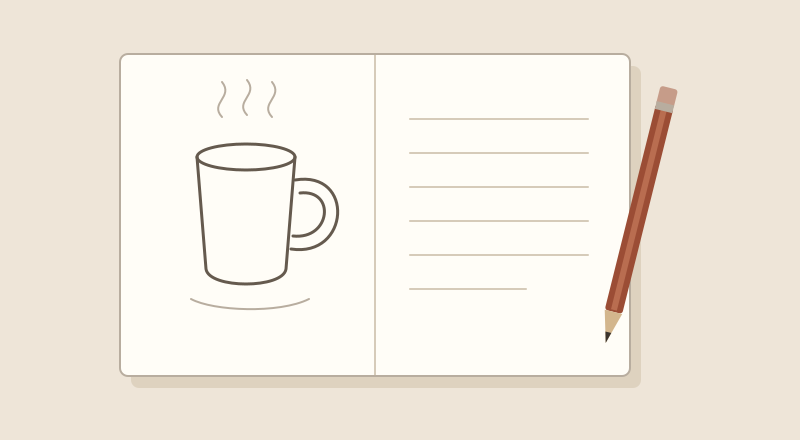

그림 주제 정하기
컵, 화분, 필통처럼 주변에서 찾을 수 있는 대상 중 오늘 그릴 것을 정합니다.
하루 한 장, 그림 연습
오늘 그릴 대상을 정하고, 연습할 내용을 짧게 적는 공간.
무엇부터 그릴지 고민된다면 가까이에 있는 물건 하나부터 시작해 보세요.
오늘의 연습 계획 적기그림 노트는 그림을 취미로 즐기고 싶은 사람을 위한 작은 연습 공간입니다. 그림 주제를 떠올리고, 연습 순서를 살펴본 뒤, 오늘 해 볼 내용을 직접 적어 볼 수 있습니다.
처음부터 멋진 작품을 완성하기보다는 한 가지 대상을 자세히 보고 그려 보는 것을 목표로 합니다.

컵, 화분, 필통처럼 주변에서 찾을 수 있는 대상 중 오늘 그릴 것을 정합니다.
주제를 고르고, 관찰하고, 그려 보는 세 단계로 연습을 시작합니다.
그릴 대상과 신경 쓰고 싶은 부분을 입력하고, 작성한 계획을 확인합니다.
해 보고 싶은 연습을 골라 간단한 팁을 확인해 보세요.
컵의 높이와 너비를 비교하고, 손잡이와 그림자가 어떤 모양인지 관찰해 보세요.
같은 나뭇잎을 가는 선, 굵은 선, 짧은 선으로 그려 보고 느낌을 비교해 보세요.
한 가지 색만 쓰기보다 밝은 색과 어두운 색을 나누어 사과의 둥근 모양을 표현해 보세요.
처음에는 모양이 단순한 물건 하나를 고르는 것이 좋습니다.
아래 입력란에 대상의 이름과 관찰할 부분을 적고, 계획을 확인합니다.
입력한 내용을 확인하고 완료 버튼을 누른 뒤, 계획에 맞춰 그림을 그려 봅니다.
그릴 대상과 연습 시간을 정하고, 내용을 확인해 계획 준비를 마쳐 보세요. 입력 내용은 저장되지 않으며, 새로고침하면 지워집니다.
1 / 4단계 · 시작
그릴 대상과 시간을 정하면 나에게 맞는 간단한 연습 계획을 만들 수 있습니다.
이전 단계로 돌아와도 적은 내용은 유지됩니다.
대상과 시간을 확인해 주세요. 고칠 내용이 있으면 이전 단계로 돌아갈 수 있습니다.
오늘의 연습 계획을 만들었습니다. 정한 대상과 시간에 맞춰 그림을 그려 보세요.